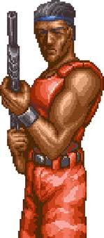

Contra (1987)
Contra é um jogo de tiro em plataforma desenvolvido pela Konami em 1987. O jogo se tornou um clássico do gênero e é amplamente reconhecido por sua jogabilidade desafiadora e estilo visual característico.
A versão original japonesa se passa em 2633 d.C., com os comandos Bill Rizer e Lance Bean sendo enviados para destruir a organização terrorista Red Falcon, que colabora com uma entidade alienígena no arquipélago de Galuga. A versão americana para NES alterou a trama para o século XX, a localização para a selva amazônica, e os personagens foram renomeados para "Mad Dog" e "Scorpion".
personagens:
Bill Rizer: Bill Rizer é um soldado de elite da unidade "Contra" do Corpo de Fuzileiros Navais da Terra. Ficou conhecido pelo codinome Mad Dog em versões ocidentais.Inspirada nos astros de ação dos anos 80. Sua fisionomia e postura na capa do jogo foram baseadas em Arnold Schwarzenegger, especificamente no filme Predador (1987).

Lance Bean: No jogo de arcade Contra (1987), ele atua como o segundo jogador (Player 2). Enquanto o primeiro jogador controla Bill Rizer (de calças azuis), Lance é distinguível por sua bandana vermelha e, na versão original, por lutar sem camisa. O design de Lance Bean foi fortemente inspirado no personagem John Rambo, interpretado por Sylvester Stallone no filme Rambo: Programado para Matar (1982). Além disso, a arte da capa do jogo para o console NES (1988) baseou-se em imagens de Arnold Schwarzenegger no filme Predador (1987).Seu nome é uma homenagem aos atores Lance Henriksen e Michael Biehn, que contracenaram no filme Aliens: O Resgate (1986).
Tutorial:
Para jogar Contra, você controla Bill Rizer ou Lance Bean em uma série de níveis com inimigos e obstáculos. Use as setas do teclado para se mover e o botão de disparo para atirar. O objetivo é derrotar todos os inimigos e chegar ao final do nível.
você precisa dominar o Código Konami (Cima, Cima, Baixo, Baixo, Esquerda, Direita, Esquerda, Direita, B, A, Start) para 30 vidas e aprender os macetes de mira, como atirar abaixado (downarrow+fire) e usar as armas certas (Spread Gun é a melhor), além de memorizar os padrões dos inimigos e chefes, focando em cooperação se jogar com dois, e praticar muito as fases de corrida (Stage 1, 3, 5) e as de túnel (Stage 2, 4)
1-Código Konami (30 Vidas): Na tela de título, insira Cima, Cima, Baixo, Baixo, Esquerda, Direita, Esquerda, Direita, B, A, Start para ganhar 30 vidas, o que facilita muito o aprendizado.
2-Armas Poderosas: O melhor power-up é o Spread Gun (S), que atira em várias direções, essencial para limpar a tela. A Laser (L) e a Fire Gun (F) também são boas.
3-Mecânica de Tiro: Atirar Abaixado- Pressione baixo e atire para acertar inimigos no chão e atirar por baixo de obstáculos. Mudar Direção de Tiro (sem se mover)- Pressione Cima para atirar para cima, Baixo para atirar para baixo, e solte para atirar para frente (quando parado).
4-Fases (Estágios): Fases de Corrida (1, 3, 5)- Foco em movimento constante, atirar em tudo e coletar power-ups. Use o cheat de 30 vidas para aprender os layouts. Fases de Túnel (2, 4)- São mais difíceis. Mire nos inimigos que atiram nas bolinhas (bunkers) e aprenda os tempos para saltar.
5-Chefes: Memorize seus padrões de ataque. Geralmente, você precisa atirar em um ponto fraco (como os olhos ou o centro) enquanto desvia.
6-Modo Cooperativo: Jogue com um amigo para cobrir diferentes áreas. Um pode focar nos inimigos de cima e outro nos de baixo
Vídeo: